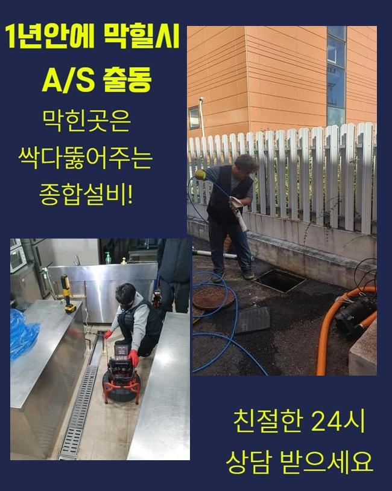
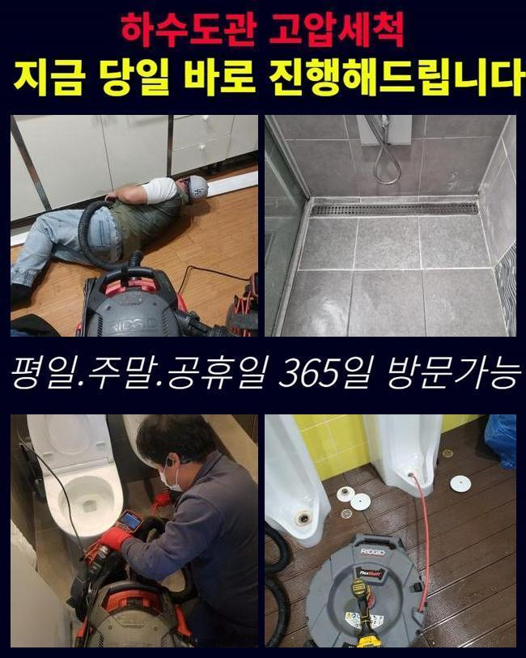
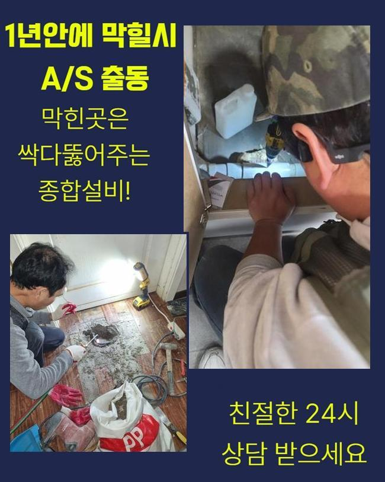
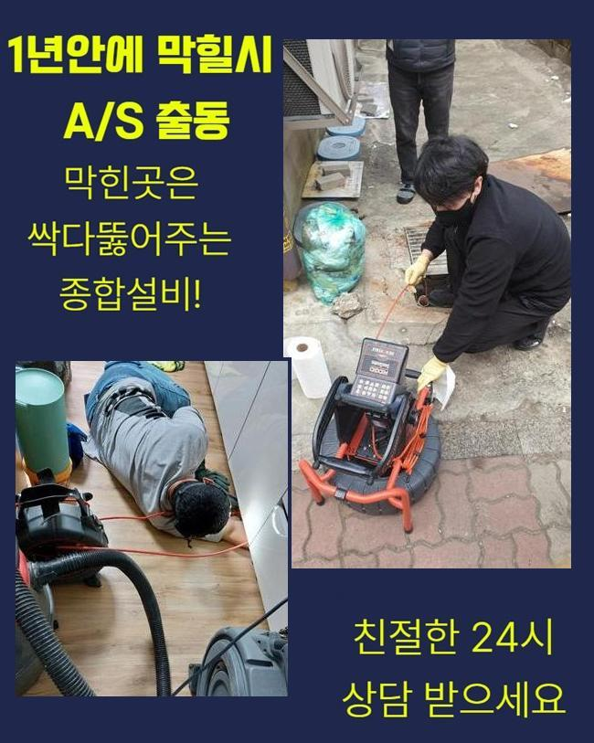
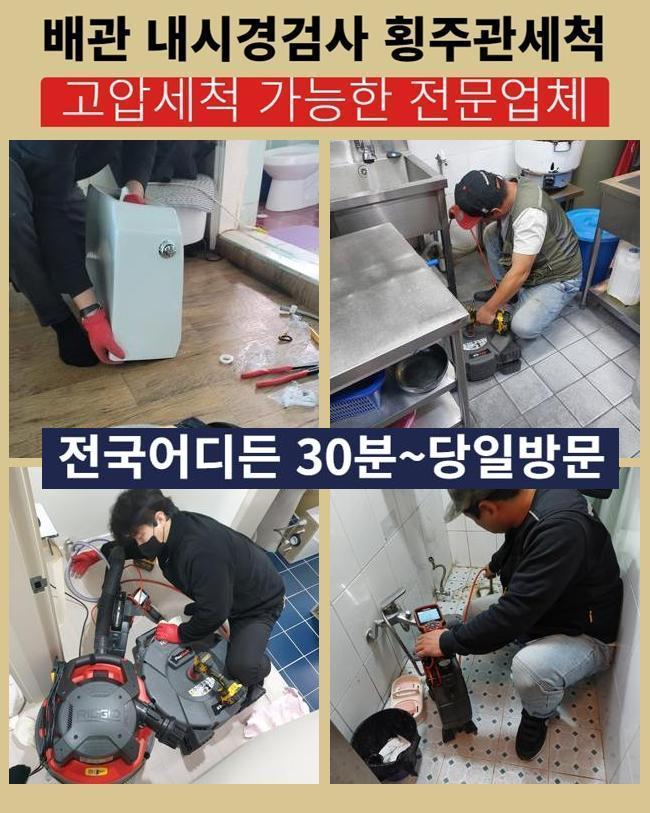
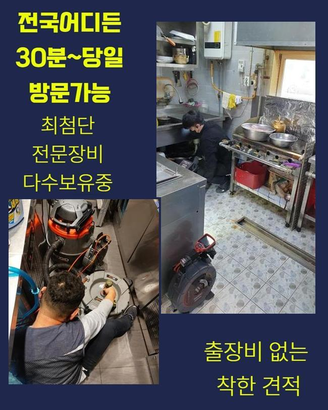
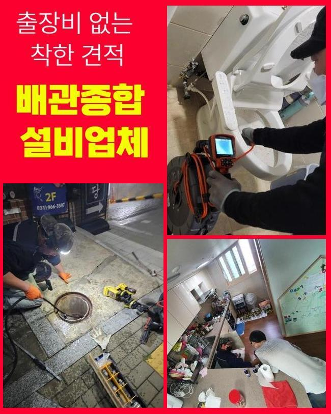

🏠 수원 남향동하수구뚫음 인계동 하수구청소 해결방법
수원 하수구막힘 전문 시공 후기

📋 작업 개요
- 위치: 수원
- 서비스 유형: 하수구막힘, 배관막힘, 역류해결, 뚫는업체, 배관청소, 고압세척, 설비공사, 악취차단
- 작업 일시: 2025. 2. 4. 16:43
- 업체명: 하수구수사대 (010-5615-2118)
🔍 문제 상황
수원 남향동하수구뚫음 인계동 하수구청소 해결방법
금번엔 구축아파트 관리사무실에서 우수파이프가 정체되어서 물이 역류해버린다는 내용을 접수받았습니다
물기가 우수관쪽으로 흘러들어가지않고 도리어 역류가 발생하여 주위가 오손되었고 벌레들도 꼬인다고 하셨죠
몇달전에도 유사한 증상이 나타났었는데 최근 일주일간 강우량이 많았기에 더욱 악화된거라고 이야기하셨어요
이로 인해 아파트단지 내부에 고약한 냄새가 퍼지게되었고 거주자들의 불편도 점차 늘어나게 되었죠
뚫음을 곧바로 진행해달라 요청하셨기에 관련한 시공준비에 착수하였죠
장소를 찾아보니 저희가 자주 지나치는 곳이었어요
고객께 바로 수리가능하다고 말씀드리고 차량에 장비를 싣고 출발하게 되었어요
현장쪽에 가보니 아파트 관리사무소 바로옆에 우수파이프가 보였어요
앞에서 체크해보니 나뭇잎들이 많았고 앞에서 체크해보니 이를 치우기위한 청소장비들이 놓여 있었죠
역류문제가 심화되면서 경비직원분들께서 수시로 치우는 상황이었어요
그래도 정황은 해결되지 않았으므로 재빠른 뚫음을 요청하신 것이었죠

🔎 원인 분석
💡 전문가 진단: 정밀 진단 장비를 사용하여 슬러지의 고착 여부를 판명하고 타격/세척 작업을 실시했습니다.
우수파이프는 낮은지대로 빗물이 모이게 만들어져야 하지만 되레 조금 높게끔 건설이 마감되어 물고임이 증대되었어요
이것을 정리하려면 굴착업무가 요망되었으나 손님분에게서는 그 부분은 한달정도 뒤에 계획해보자고 하시면서 일단은 우수관 통수를 해달라 요청설명해 주셨어요
우수배관의 막힘현상을 본격적으로 검사해보니 나뭇가지들도 있었으나 집안에서 나올법한 찌꺼기들도 굉장히 많았답니다
그것때문에 배관이 막혔고 역류증세까지 발현되게끔 정황이 악화된것이죠
이에 대해 가정내에서 우수배관으로 물을 흘려보낼수가 있나 확인해 보았는데요
저층세대의 베란다에서 쓰고 계시다고 말하셨답니다
이러한 것들에 대해서 자주 주의방송을 하였으나 온당하게 수행되지않는 상태라고 설명하셨죠
이문제가 지속된다면 수리후 막힘상황이 다시 일어날수가 있단 사실을 고지하였으며 연관된 예방조치를 취하기로 하셨어요
배수시설물을 점검하니 하수가 적절히 빠져나가지 못하는게 곧바로 목도되었어요
배수시설 주위에 오염물질들이 너무 많아서 시공에 임하기 수월치 않았어요
또 관로입구에 잔류하는 침전물도 많고 크기도 커서 간소한 장비로 처치하기엔 여의치 않았죠
그래서 저희들은 스프링장비를 동원하여 강력하게 세척해주는 방안을 시작하게 되었죠
우수관로 주위가 비좁은 상태였고 가랑비가 내리는 바람에 시공에 어려움이 있었는데요

🔧 작업 과정
이러한 나쁜 컨디션에도 거주자분들의 고초를 최소화시키기 위하여 바로 공정을 수행하였죠
내시경cctv는 관로속을 관측하고 이물의 양을 확인하는데 핵심이라고 볼수 있답니다
내시경을 통하여 우수관로 안의 상태를 정밀하게 파악가능하며 그것으로 작업시간을 절약하였죠
그와 함께 배관스프링 청소기를 통해 세척하는 공정이 단행되었습니다
특정 배관의 경우에는 거름장치가 없어 노폐물들이 쉬이 들어오는 정황이 빈번하게 나타나죠
그렇게되면 침전물들이 적체되고 종국엔 파이프가 막혀버려 역류현상이 일어나거나 해충들이 꼬일 가망성도 높아지죠
그걸 방예하려면 정기적 세척이 요청되고 잔재들이 못 들어가게끔 배수구망을 걸어두는 작업도 필수입니다
그것들과 관련해서 고객께 설명해드렸으며 또 외부환경에 많이 노출된 관로일수록 더욱 신경쓸 필요가 있다는걸 강조해 드렸죠
청소를 수행하면서도 우수관 벽면에 금이 가지는 않았는지 물이 새는 부분은 없나 확실하게 조사하였답니다
그러한 과정을 바탕으로 예상하지 못했던 사고상황을 차단하고 의뢰자님의 평탄한 일과를 만족시킬수 있어요
커다란 잔재들을 들어낸 다음에도 관내부엔 아직도 잔류물질이 상당량 남겨져 있었답니다
그것을 처리하려 샤프트기기를 적용하였습니다
샤프트기기는 재빠르게 움직이는 체인을 활용해서 관로면에 접착된 슬러지들을 갈아버리는 기계로 가는 노즐에 연결되어 빈틈없이 찌꺼기들을 없애나갈수 있어요
거기에 더해 배관면을 파손하지 않기에 안전히 사용가능하다는 강점이 존재해요
작업중에 빗방울이 잦아들었고 바닥면에 고였던 성분을 처치하려 흡입기기를 사용해 시공을 종료하였죠
샤프트기기로 처리한 성분들을 반복적으로 흡입기기로 청소하며 완전무결하게 트러블을 정리할수 있던거죠
의뢰인의 고통을 조속히 없애드리고자 하는 생각으로 끝까지 성심성의껏 일하였고 배수관은 이전과같이 유동성을 가진 모습으로 복원되었죠
이를 통하여 깔끔한 우수배관을 유지해나가는 일이 필수라는 걸 거듭해서 상기하게끔 해드렸죠
관로가 정체된다면 간단히 불편함으로 마감되는게 아니고 더욱더 심각한 상황으로 전이되기도 하므로 자주 세척하고 보존해나가야 한단걸 항시 말씀드린답니다
더군다나 여기는 우수관로 입구의 설비가 높은위치에 자리잡고 있었기에 더욱 자주 손봐야한다는 내용도 알려드리게 되었죠


✅ 작업 완료
고객님에게서는 배관 내시경 내시경을 통하여 전제척인 우수관 모습을 바로바로 보실수 있었으며 공사를 마친뒤엔 다량의 물로 테스트를 진행하였어요
위와 같은 수순으로 단지내의 우수관로의 트러블을 처치했으며 물이 넘치는 증세도 확실하게 처리되었어요
평소관리가 힘겨운 우수관로나 기타 배관문제도 전문업체를 통해서 철저히 관측하고 정비받으시길 당부드려요
여러분들의 배수설비에 문제가 안나타나기를 기원합니다
만일 이상현상이 발생하면 지체하지말고 문의해주세요 신속하게 이동하겠습니다




⚠️ 하수구 배관 막힘 예방 및 관리 가이드
- ✅ 머리카락, 비닐, 물티슈 등 물에 분해되지 않는 이물질은 하수구 유입을 절대 금지해 주세요.
- ✅ 하수구 거름망을 씌우고 모여진 이물질은 주기적으로 쓰레기통에 바로 비워주셔야 합니다.
- ✅ 배관 노후가 심할 경우 이물질이 더 쉽게 걸리므로 주기적인 배관 세척(고압세척 등)을 권장합니다.
- ✅ 작업 후 1년 이내 재발 시 하수구수사대에서 무상 A/S 보증 서비스를 제공합니다.
💡 핵심 정리
- 확실한 장비 작업(내시경 점검 및 샤프트 스케일링)으로 원인을 뿌리 뽑습니다.
- 작업 후 1년 이내에 동일한 부위 재발 시 100% 무상 A/S 서비스를 보장합니다.
- 서울 · 경기 · 인천 전 지역에 24시간 언제든 긴급 출동할 수 있도록 항시 대기 중입니다.
❓ 자주 묻는 질문 (FAQ)
🚨 수원 하수구막힘 문제로 고민이신가요?
정확한 원인 진단과 확실한 시공으로 재발 없는 해결을 약속드립니다.
24시간 긴급 출동 | 서울 · 경기 · 인천 전지역 | 1년 내 재발 시 무상 A/S